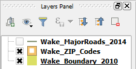

This lesson's project has three layers that we use to exemplify how to label layers with different geometry types. Bear in mind that most of the label's settings are similar for the three geometry types, only with small differences in placement and rendering.

Let's start by labeling a polygon layer.
In the Layers Panel, click the Wake_ZIP_Codes layer to make it active.
The Wake_ZIP_Codes layer should be highlighted now.
Click Move to next step.